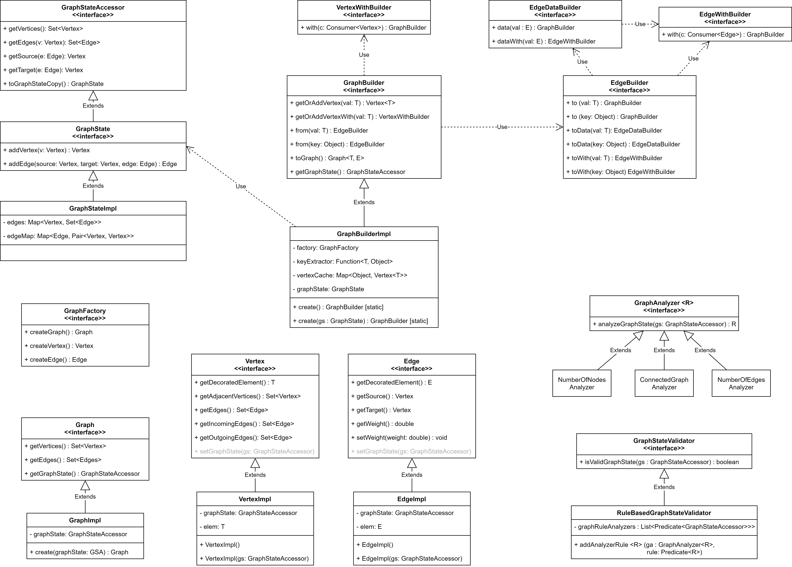
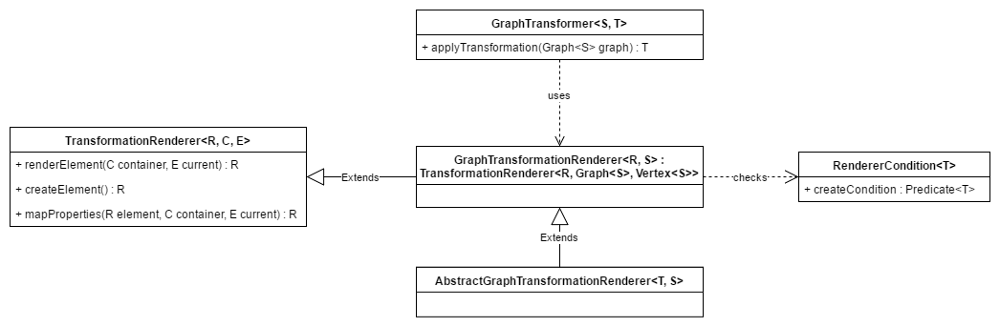

GTF
The Graph Transformation Framework. This Framework can be used, to transform between different graphs by using Transformers and Renderers.
The Structure
The Framework consists of two different parts.
The one is the graph itself, which provides the domain classes and the possibility to travers the graph.
The other one is the transformation between graphs. This part is responsible for the renderer of objects and the transformation of different structures.
Domain Classes

A graph can have multiple vertices, which are connected with other vertices over edges. An edge exactly connects two vertices, so it has a source and a target. Each vertex decorates a specific element, which represents the data itself. Moreover, it has the possibility to store MetaTags, which provide additional information about the vertex.
A Graph can be traversed with different traversal strategies. At the moment there only exists one implementation for depth first. The traversal itself uses the visitor pattern to travers through the vertices and edges. To travers a graph, the according strategy needs to be set to the graph, followed by that, the traversVertex or traversEdge method can be called.
Transformation
The transformation is logically divided into different types of transformation.
Graph Transformation

At first, there is the GraphTransformer which uses a Graph as an Input and Transforms it into any type of object. This can then use renderers, to create new objects out of each vertex. A renderer again uses a renderer condition to decide if it should renderer a specific element or not.
Usage
The basic usage is explained in the README of the github project. Additional usage can be found in the unit tests of the different modules.